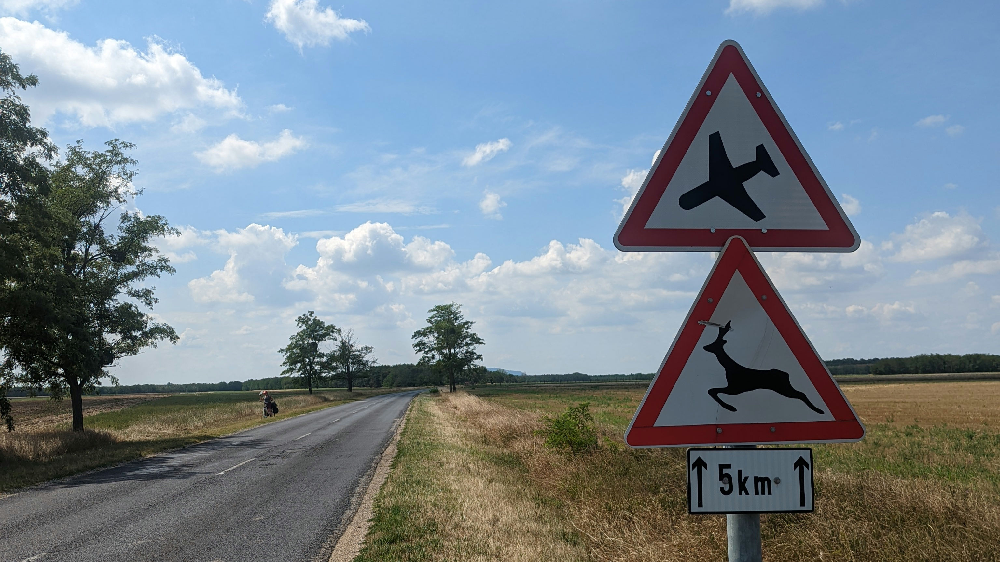
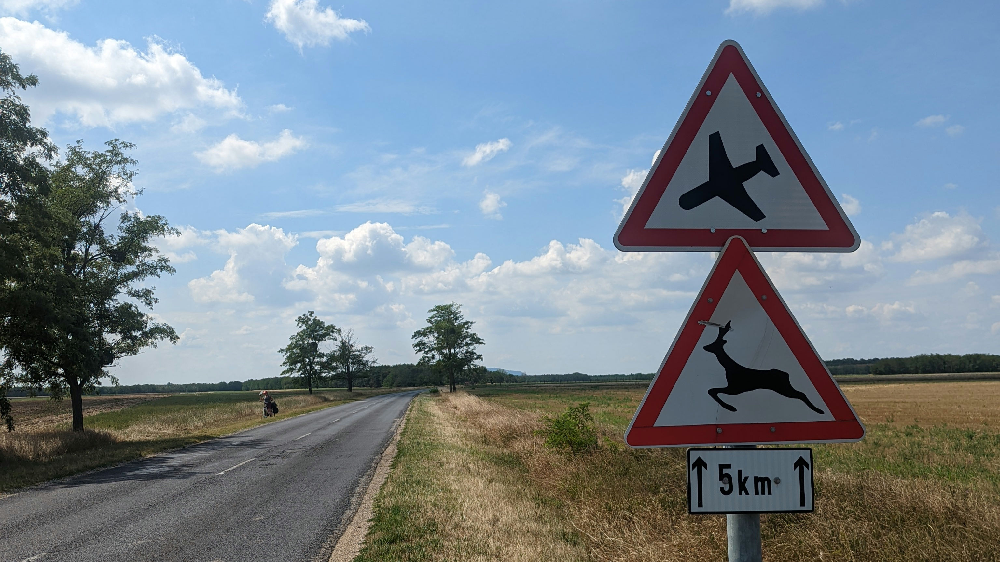

Stopárov sprievodca maďarským vidiekom
Pápa -> Keszthély (87km)
Pápa -> Keszthély (87km)
Po v캜erajšej kalvárii sme sa zobudili do jasného a teplého d켿a, 캜o je presným opakom ideálneho po캜asia pre cyklistiku na dlhé trasy. S 쬬hkým povzdychom sme sa však odhodlali postavi콘 z postele a po rannej hygiene, zamieri콘 na ra켿ajky, ktoré boli v cene, doplnili sme energiu jedlom a ke캞쬰 bolo podávané štýlom švédskych stolov, tak sme si trocha uleteli a najedli sa do popuku, boli sme vo ve쬸i dobrej nálade, ktorú nám takisto zlepšovala príjemná obsluha hotela. Vyriešili sme formálnosti, op칛콘 nalo쬴li a osedlali naše opachy a op칛콘 zabrali do pedálov. Vyrazili sme h쬬da콘 potraviny. Sprvu sme blúdili po zdajne nekon캜iacich uliciach mesta, ktoré nás 코콘astnou náhodou doviedli k historickému centru Pápy. Op칛콘 som si uvedomil, 쬰 v Maďarsku sa elektrikári netrápia s vedením elektriny, kade-tade viedli káble r칪znej hrúbky a v칛캜코ina z nich viedla k ďalšej teraz u nás neprekvapujúcej retro telef칩nnej búdke. V pozadí hral fidlikant zvu캜ku Hviezdnych vojen a obchod, ku ktorému nás mapy odnavigovali vyzeral, 쬰 u je dobrých dvadsa콘 rokov zatvorený. Prenechal som teda navigáciu k ďalšiemu obchodu mojej spolo캜n칤캜ke, vďaka ktorej sme po nieko쬶칳ch ďal코칤ch blúdnych odbo캜kách n치코 potulný cirkus dokázali doviez콘 a k vyt칰쬰nému COOP ABC Szuper. Nakúpili sme tekutinu pripomínajúcu vodu a 캜itajúcu nejaké nezrozumite쬹칠 zaklínadlo. Dnešný plán bol jasný, zobra콘 to po v캜erajšom výkone z쬬hka a vyt칳캜i콘 si cie n치코ho dnešného putovania... Balaton. Po v캜eraj코칤ch incidentoch s nepríjemnými vodi캜mi sme sa dnes rozhodli da콘 si pozor a výlu캜ne sa dr쬬콘 cyklotrás. To sme ale ešte nevedeli, 쬰 v Maďarsku sa pojem cyklotrasa berie trochu inak. Systém funguje asi takto, vyberie sa cesta, ktorá nie je v prvotriednom stave, ale je samozrejme úplne be쬹e pou쮂셨aná, postaví sa k jej boku zelená zna캜ka s cyklistom a je hotovo, nová cyklotrasa je na svete. Ale niet sa 캜omu 캜udova콘, v tejto r칤코i divov je mo쬹칠, 쬰 tá istá cesta je s칰캜as콘ou pristávacej dráhy letiska a je na tebe, 캜i si d치코 pozor alebo 콘a zoseká motor pristávajúceho 캜meliaka. Ale aspo켿 na nás tentokrát nikto nevytruboval, ani auto a ani 캜meliak. Ako sme sa vnárali 캜oraz viac do útrob tejto potvory, v코칤mali sme si, 쬰 to 캜o sa nám zdalo v캜era, sa dnes pretavilo v realitu, 쬿dia tu v치쬹e v niektorých dedinách 쬴jú skuto캜ne v mizerných podmienkach. Majú síce detské ihriská a krásne ozna캜enia ulíc, ale mnoho domov vyzerá na rozpadnutie a všade je hrozná špina a smrad. Cesty boli lemované sme콘ami. Kaštiele niekdaj코칤ch panovníkov zívajú prázdnotou, sú oplotené ostnatým dr칪tom a spoza múru vidno, 쬰 dlho u st치콘 nebudú. To sa samozrejme deje aj u nás, ale v Maďarsku, kde si ctia tradíciu nadovšetko je to nanajv칳코 zar치쬬júce. Po meste Jánosháza sa to o nie캜o zlepšilo, ale to, 캜o sme videli sa mi vrylo do pam칛ti, preto o tom aj p칤코em. Zabudnutý kraj, zabudnutí 쬿dia... Nakoniec po nekone캜ných odbo캜kách na Kossuth Lajos utca sme dorazili do prvého významnejšieho bodu našej cesty, Keszthély. Akoby sme prišli do úplne inej krajiny. Celý kraj p칪sobil ve쬸i rozvinuto a 캜isto. Všade boli cyklotrasy, krásne parky, nádherné historické budovy. Aspo켿 niekde to tu vyzerá poriadne. Vyh쬬dali sme kemping, no keď sme tam došli, nebolo tam ani ducha. Na코콘astie sme si všimli, 쬰 sa m칪쬸e "ubytova콘" a do neskorého ve캜era a ráno vybavi콘 chek-in, platby a papierova캜ky. Rozlo쬴li sme teda stan, osprchovali sa a u ako je to u nás zvykom, vybrali sme sa po vy캜erpávajúcom dni do mesta. Cestou som Patrícii s쮂죡il, 쬰 ju vezmem na drahú ve캜eru za snahu, ktorú vynakladá, prišlo mi to, 쬰 si to zasl칰쬴. Keď však prišiel moment platenia, nejako sa mi nezdalo ko쬶o núl do prístroja 콘uká pani 캜ašn칤캜ka. Nie, 쬰 by ich bolo prive쬬, naopak, málo, no moja hlava po litri dobrého piva nemala v pláne rieši콘 nejaké vidiny, tak som sa teda poďakoval a odišiel. Ešte sme si obzreli ve캜erné mesto a ponáh쬬li sa do kempingu, aby sme mohli ráno skoro vsta콘. Zajtra toho chceme ve쬬 stihn칰콘...


 
